The greatest atrocities that man has had to endure at the hand of his
fellow man have been in the name of GOD.
The pages of the Bible are painted red with blood spilled to please this
bloodthirsty vampire known as "God."
The Bloodthirsty
Vampire
The Bible reveals an important, yet often overlooked trait of God's nature
and that is his thirst for blood. From the beginning of his dealings with man
he has shown his preference for spilled blood; he accepted Able's offering of
sheep's blood and rejected Cain's offering of grains and plants (Genesis
4:3-5). God has told man that the shedding of blood is required to be forgiven
of sins (Leviticus 17:11, Hebrews 9:22). In the Old Testament, millions of
animals were slaughtered and their blood poured onto altars and burned in a
futile attempt to please God. The smoke from the burning flesh and blood was
such a sweet scent to God (Exodus 29:18, Leviticus 1:9), that his anger was
appeased when he smelled the sweet, burning blood (Genesis 8:21) Even the
human/god sacrifice of Jesus is compared to the sweet smelling barbecue of an
animal (Epehsians 5:2). Why is blood so sweet to this vampiric God? Why is
blood required to be spilled in order to receive forgiveness from this
"merciful" God? Don't ask these questions, "just believe,"
you will be told. Besides why risk ending up in an eternal barbecue just
because things smell a little strange to you?
Bloodshed in The
Bible
Knowing God's fondness of blood, it isn't surprising to find out that his
"word;" the Holy Bible, is filled with bloodshed. When we read the
Bible, we get to see a first-hand glimpse of God's true nature...and a very
bloody nature it is indeed. The Bible tells us that God commanded: "Thou
shalt not kill," yet King Saul lost his throne because he didn't kill
everything God had commanded him to (1 Samuel 15:3, 9-11). We now present some
examples of the bloodthirsty nature of God straight from the "good"
book itself.
NOTE: The analysis that follows is largely based on the irrational belief
that an actual God(s) exists and that the world is subject to intangible,
magical forces. For a more probable analysis of who the authors of the Bible
were talking about when they used the word "God," see
The Immaculate Deception..
Index
"Sacrifice"...a word often heard coming from pulpits as preachers
attempt to bleed dry the pockets of their congregations. Put simply, sacrifice
is merely giving up something of one value for something of lesser value. The
word "sacrifice" is synonymous with the word "injustice,"
because when something of value is traded for something of a truly lesser
value, an injustice has occurred. In accordance with the twisted morality of
the Bible, it isn't surprising that sacrifice is considered a virtue rather
than the sin which it really is.
One of the greatest examples of God's true nature is reflected in the fact
that he not only accepts sacrifices, but he demands them. God has
demanded that blood be spilled in order for him to extend his mercy (Leviticus
17:11). Thousands of years ago, God was willing to accept the spilled blood of
animals in exchange for his forgiveness, but even the deaths of billions of
animals didn't provide enough blood to satiate his hunger. The Bible tells us
that humans were to be killed as an offering to this bloodthirsty God
(Leviticus 27:29) even though modern believers deny that God accepted human
sacrifice, that's exactly what these executions were. Even that human blood
wasn't sufficient to permit God's "grace" to cover the sins of man so
a half human/half God (Jesus) had to be killed. Now we have the ultimate
injustice...spill the blood of the most valued in exchange for the least
worthy. And somehow this injustice (sacrifice) is so "perfect" that
God is able to extend his "perfect mercy" without offending justice.
If you're confused, you must not have a Christian background because this is
exactly what the fundamental view of salvation amounts to. "Washed in the
blood of the lamb," as they sing in church. What a disgusting image that
paints.
More examples concerning blood sacrifices to God in the Bible:
- Cain offers the fruit of the ground to God while Able sacrifices the
firstborn of his flocks. God respects the blood sacrifice but not the offering
of plants. - Genesis 4:2-8
- Noah brings seven of each "clean" animal onto the ark and two of
each of the "unclean" animals so that he will have plenty of
"acceptable" animals to sacrifice to God. The first thing Noah does
after getting off the ark is kill some of the animals that he had saved for
God. The smell of burning meat softens God's heart and he promises not to flood
the earth like that again. - Genesis 7:2-3, 8:19-21
- God demands that all the men of his "chosen race" mutilate their
penis and spill their own blood as a form of mini-sacrifice to show their
loyalty (See Sexual Mutilation). -
Genesis 17:11
- God commands Abraham to kill his son as a human sacrifice, but changes his
mind at the last minute. - Genesis 22:1-2
- God sends Jephthah's daughter out to him as a sign that he is to kill her
and offer her as a human sacrifice. God doesn't change his mind on this one. A
possible reflection of the ancient Hebrew value of women versus their value of
men. - Judges 11:30-39
- God goes to great lengths to describe exactly how animals are to be
slaughtered, prepared, and roasted so that they will be pleasing to the Lord.
Why he couldn't have dedicated that space in the Bible to something useful,
like a cure for cancer or a way to improve infant mortality rates tells us alot
about God's real agenda. - Leviticus Chapters 1 through 10
- Anytime innocent men, women or children are killed because of God's anger,
it must be considered to have been a human sacrifice. God accepts these
"sacrifices" with glee, often killing the innocent along with the
guilty. The number of instances where this happens in the Bible are staggering.
- Genesis 7:21-23, 19:25, Exodus 11:5, Numbers 11:1, 15:36, 16:22,
Deuteronomy 20:16, Joshua 6:21, etc. etc. etc.
- After capturing all the Midianite women and children, God commands Moses to
kill the women and the male children and to "keep the virgin girls alive
for yourselves." Moses then proceeds to offer 32 of the 32,000 virgin
girls to God as a "tribute." We know from Leviticus 27:29 that these
32 girls would not be allowed to stay alive but were offered as a heave
offering (burnt on the sacrificial altar) to the Lord. - Numbers
31:17-18,40-41
- To appease God's wrath, King David had 7 sons of the dead King Saul
crucified. The mother of two of these men sat in front of their bodies as they
rotted in the sun for weeks. She is commended for sitting there and driving off
the wild animals and vultures that tried to eat her dead sons carcasses. To
make things better, King David takes their bodies and has them buried in the
royal cemetery. I bet she felt a lot better after that act of generosity. When
the 7 men are offered as a sacrifice, God removes the curse he had put on the
land. Who says God can't be bribed? - 2 Samuel 21:1-10
- One of God's prophets declares that "this is is the day of the Lord
GOD of hosts, a day of vengeance, that he may avenge him of his adversaries:
and the sword shall devour, and it shall be satiate and made drunk with their
blood: for the Lord GOD of hosts hath a sacrifice in the north country by the
river Euphrates." A clear reference to the fact that the slaughter of
humans was considered a sacrificial offering to God. - Jeremiah 46:10
- God says that rather than punish his wayward people by killing them like he
would do in earlier times, he let them become idolatrous so that they would
sacrifice their firstborn children on fiery altars. The reason God gives for
causing this horror is so "that they might know that I am the Lord."
- Ezekiel 20:21,24-26
One of the great paradoxes of the Bible is the fact that God gave man the
commandment "Thou shalt not kill" then turned around and ordered the
slaughter of countless animals and human beings. He also claimed that anything
which killed a man would be killed by man (Genesis 9:6), unless, that is, God
wanted them to kill man, then they could get away with it. God's morality is
based on the changing whim of God alone. Don't even try to figure it out!
Biblical examples of God ordering man to kill his fellow man or condoning
the killing of humans:
- During a battle with a rival group, God lets the Israelites kill more of
the enemy when Moses holds his magic staff of God in the air. When Moses lets
his hand fall down, the enemy prevails in battle. The Israelites weaken, but
don't destroy the enemy. God promises that one day he will get his revenge and
destroy them entirely. - Exodus 17:8-14
- When Moses comes off the Mount with the Ten Commandments and sees the
people worshipping a golden calf, God commands him to take his loyal followers
and have them "slay every man his brother, and every man his companion,
and every man his neighbor." Three thousand people end up dying in the
slaughter. -Exodus 32:26-28
- God promises his chosen people that if they obey him they will overpower
their enemies and kill them with the sword. He goes on to say that 100
Israelites will scare away 10,000 of the enemy. - Leviticus 26:7-8
- God commands Moses to have the people kill a man who picked up sticks on
the Lord's "Holy" day. They stone him to death. - Numbers
15:32-36
- God's people make a vow that if God delivers the people of Canaan to them,
they will kill all the Canaanites and destroy their cities. God gladly obliges
and they name the ruins "Hormah" which means
"annihilation." - Numbers 21:2-3
- Moses asks to pass through the land of a king who refuses to give them
permission. Moses proceeds to kill everyone in that kingdom. When another king
tries to stop the invading Israelites, God tells Moses, "Don't be afraid,
I've delivered him into your hands so you can utterly destroy him just like you
did to the Amorite king and his people." So God's people obeyed God and
slayed the king and his sons and all his people, "until there was none
left alive." - Numbers 21:21-35
- When some of the Israelite men began to become friendly with the women who
lived in the cities they invaded, God commanded Moses to kill them and hang
their heads up to dry in the sun so "that the fierce anger of the Lord may
be turned away from you." While this is going on, Aaron's grandson saw an
Israelite man trying to sneak one of the women into his tent. He reacts by
driving a spear through the stomachs of both of them simultaneously. God was so
pleased by the zealousness of this act, that he ended a plague which he had
sent to kill the Israelites in his jealousy. Only 24,000 Israelites had died of
the plague by that time. - Numbers 25:4-13
- Moses responds to God's anger by ordering his army to kill the five
kingdoms of Midianites (the people that the Israelite men were being friendly
with in the above example). These were the same people that had welcomed Moses
with open arms when he originally fled from Egypt after murdering an Egyptian.
They even allowed him to marry one of their women. We now see how Moses repays
their kindness: his army kills all the men and captures their women and
children. When Moses sees the thousands of captives, he gets angry because it
was the Midianite women which caused the Israelite men to stray from God's
commandments in the first place. Moses says to his soldiers, "Have you
kept the women alive? They are the reason God sent that plague to kill 24,000
of us." He then commanded his army to kill all the boy children and all
the women who were not virgins. The Bible doesn't tell us how they determined
who was a virgin but we can imagine it was a humane and caring exam based on
the past record of God's people. The Israelites then kept all the virgin girls
for themselves, dividing them up along with the livestock. (See
A Really Scary Story) - Numbers 31
- Another king tries to stop the Israelites from invading his land. The Bible
tells us that the reason this king was obstinate was because God hardened his
heart so that the Israelites could prove God's power. In their words, "And
we took all his cities at that time, and utterly destroyed the men, and the
women, and the little ones, of every city, we left none to remain." -
Deuteronomy 2:30-34
- They then repeat their bloody performance when another king tries to stop
them. God delivers over 60 cities of this kingdom to them. They didn't spare a
living human being in any of the cities, "utterly destroying the men,
women, and children, of every city." - Deuteronomy 3:1-6
- God makes it very clear that they are not to show mercy to any of the
cities that God tells them to invade, ordering them to kill man, woman and
child and utterly destroy them. - Deuteronomy 7:10
- God makes an exception to his "kill them all" policy only when
the Israelites decide to invade a kingdom that God hasn't told them that they
can have. If they decide to take some land without God's prior approval, they
are to first call a truce to the city. If the city accepts the truce, the
Israelites are to capture everything in the city and make all the people their
slaves. But if the city doesn't accept their "truce" they are to
besiege the city until the city collapses, then they are to kill all the males
in the city and capture the women and livestock. Then God reiterates his prior
command that if he gives a city to them, they are to utterly destroy them and
"thou shalt save alive nothing that breatheth." Quite a far stretch
from "Thou shalt not kill" isn't it? - Deuteronomy 20:10-17
- After Moses dies, Joshua takes command of the Israelites and the REAL
bloodshed commences. God begins Joshua's reign of unholy terror by telling him
to not be afraid because God will help him kill all who stand in the way. God
then gives Joshua the power to kill anyone who doesn't do anything that Joshua
tells them to do. What kind of morality is this??? The same morality that a
monster like Hitler believed in. The morality of the tyrant. - Joshua
1:1-2,5,18
- Joshua makes the walls of the city of Jericho fall apart using his magic
ark and seven magic trumpets, then the people ran into the city "and they
utterly destroyed all that was in the city, both man and woman, young and old,
and ox, and sheep, and ass, with the edge of the sword." - Joshua
6:20-21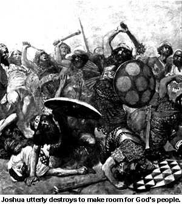
- God, the Warlord, tells Joshua to lead the people to a city called
"Ai" and he gives them a battle plan. Joshua enacts this brilliant
plan by hiding some of his army on one side of the city's walls and attacking
the city with a smaller group on the other side. When Joshua attacked the city,
he pretended that he was outnumbered and fled from the defenders of Ai. All the
men in the city of Ai pursued the retreating Israelites, leaving the city
undefended. At that time, the hiding Israelites ran into the undefended city
and set it on fire. The men of Ai turned in horror upon hearing the screams of
their burning loved ones and it was as they tried to return to the aid of their
burning women and children that the army of God slaughtered all the men of Ai.
Then as the remaining women and children tried to flee the burning city, God's
chosen army cut them down "so that they let none of them remain or
escape." 12,000 people were killed in the massacre. The only remaining
survivor was the king, who Joshua hung from a tree after making him watch the
destruction of his beloved city, then they threw his dead body onto the remains
of the city gate's entrance. Such is the love and mercy of God and his chosen
people. - Joshua 8:1-29
- Joshua's bloodbath now takes on a new dimension. God stops the sun and moon
in the sky to give Joshua an extra day of light to continue his killing spree.
- Joshua 10:12-14
- Joshua proceeds to utterly destroy the kingdoms of Lachish, Makkedah, the
Gibeonites, the Libnahites, the Eglonites, the Hebronites and the Debirites.
The five main kings were captured and Joshua had his men place their
"feet" (genitals? - See Biblical Sex
Talk) on the necks of these kings. Afterwards he killed the kings and hung
their bodies in trees for all to see. The fact that his men putting their
"feet" on the necks of the kings hadn't already killed them
strengthens the theory that it was their genitals which the Israelites placed
on the necks of the kings as an insult. The kings of the other cities were
killed and laid on the ruins of their cities just like the king of Jericho. The
Bible sums up all the horrifying bloodshed by saying, "So Joshua smote all
the country of the hills, and of the south, and of the vale, and of the
springs, and all their kings: he left none remaining, but utterly destroyed all
that breathed, as the Lord God of Israel commanded." - Joshua
10:27-40
- When the remaining kings heard of the slaughter which Israel was performing
across their land, they banded together to try to stop the horror. God kept his
word and allowed Joshua to utterly destroy all of them as well. - Joshua
11:1-14
- When the last remaining tribe tried to escape by running away into the
mountains, Joshua hunted them down and kill them all. - Joshua 11:21
- Of all the cities which God's chosen people came upon, only one of them was
able to escape utter annihilation and that was because they pretended like they
weren't from that area. These people acted like travelers who also worshipped
the Israelite God and they told Joshua that they had come from a far away land
to join with the Israelites. In that way, they tricked Joshua into making an
oath of peace with them. He repaid their trickery by making the entire city and
all their future offspring, slaves. No mention is made of why God didn't tell
Joshua that he was being deceived. Joshua discovered the deception by deductive
reasoning rather than divine revelation. - Joshua 9:1-27
- The Bible says that no other cities made peace with the Israelites because
God hardened their hearts and made them want to fight. God manipulated their
hearts just so he could utterly destroy all of them and show them no mercy,
resulting in their total extermination as he had promised Moses. - Joshua
11:19-20
- After Joshua dies, God replaces him with Judah who commences to slay the
people in the land of Canaan by the tens of thousands, burning their cities and
not allowing any to escape. - Judges 1:1-20
- God helped Judah to drive out the inhabitants of a mountain but the ones
that lived in the valley had iron chariots and Judah couldn't drive them out.
In fact, these same people continued to live where they were at that time until
the time of the writing of the Bible. No mention is made of God not keeping his
word and letting them utterly destroy these people, nor is it mentioned why
having iron chariots was an insurmountable obstacle to an All-mighty God. -
Judges 1:19-21
- The Israelites' bloodbath begins to subside as the people learn they can
increase their profits by taxing the inhabitants of cities without destroying
them. God takes offense and warns that they will be cursed if they don't kill
everyone. The Israelites eventually fall under the rule of the king of Moab. In
time, the Israelites sent the king some presents which were carried by an
assasin. After the assassin killed the king, the Israelites proceeded to kill
10,000 unsuspecting Moabites. - Judges 3:12-29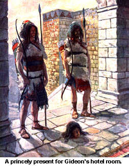
- The hero of the hotel-filling Bible group: Gideon, snuck up on the camp of
the Midianites and made a horrible crashing noise with pots and trumpets in the
middle of the night. When the people in the camp woke from the noise they
thought they were under attack and in the darkness, proceeded to kill each
other. The ones who escaped the carnage were hunted down by Gideon and his men
and mercilessly slaughtered. Gideon's men brought the severed heads of the
princes of the Midianites back to present to Gideon. Perhaps they left these
heads in the dresser drawer of a hotel, since today, Bibles are left in hotel
dressers in the name of Gideon also.- Judges 7:7-25
- Gideon chases the Midianite kings and eventually captures them, killing the
men of the city of Penuel in the process. He orders his young son to kill the
captive kings with a sword but the boy doesn't have the "guts" to
perform the heartless task. So Gideon takes his sword and kills the kings
himself. - Judges 8:17-21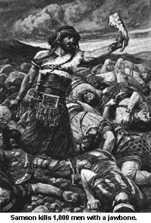
- Samson, with strength given to him from God, kills 30 men to pay off a
gambling debt, kills 1,000 men with the jawbone of an ass, and then pulls down
the pillars of a house, killing an additional 3,000 people. - Judges 14:19,
15:15, 16:27-30
- While spying for more lands to invade, the Israelite tribe of Dan finds a
peaceful city of pagans who are quietly keeping to themselves. The men of God
descend upon the unsuspecting people of the city and kill them with the sword.
Then they burned the pagan city. - Judges 18:27-29
- After an Israelite man cut up his dead concubine and sent her to the tribes
of Israel (See Forced Entry) the other tribes
of Israel demand that the tribe of Benjamin turn over the people who lived in
the city that raped the man's concubine so they could kill the people of that
city. The tribe of Benjamin didn't want to allow one of their cities to be
destroyed because of the acts of a few men so they defended the city. The army
of God repeatedly attacked the defenders of the tribe of Benjamin but couldn't
defeat them. Finally God helped them achieve victory by tricking the defenders
into pursuing a smaller group and then setting fire to the poorly defended
city. They killed over 25,000 "men of valor" who were merely trying
to prevent a "mob's justice" that day. Then "the men of Israel
turned again upon the children of Benjamin, and smote them with the edge of the
sword, as well the men of every city, as the beast, and all that came to hand:
also they set on fire all the cities that they came to." This is mob
mentality gone out of control. Thousands of people massacred because a group of
men raped a woman. Such is the justice of the godly. - Judges 20:4-48
- During a battle with the Philistines, God "thundered with a great
thunder" and confused them, allowing the Israelites to kill them with a
great slaughter. - 1 Samuel 7:7-11
- The Spirit of God comes upon Saul and he leads an army of 330,000
Israelites to kill an invading force of Ammonites. - 1 Samuel 11:8-11
- Saul's son, Jonathan snuck off into the camp of the enemy and God sent an
earthquake to help save him when the Philistines caught him there. In the
confusion, Jonathan escaped and brought the Israelite army back to attack the
Philistines only to find that they were killing each other in their confusion.
After the slaughter, Jonathan eats something, disregarding a holy fast which
his father, the king had ordered. He rationalizes that if everyone had eaten
instead of fasting, they would have had more energy and could have killed even
more of the Philistines. King Saul orders his son to be executed for breaking
the fast, but the people refuse to carry out the command of God's king and
Jonathan's life is spared. God is curiously silent throughout the entire
affair. - 1 Samuel 14:1-45
- King Saul is commanded by God to "go and smite Amalek, and utterly
destroy all that they have, and spare them not; but slay both man and woman,
infant and suckling, ox and sheep, camel and ass." This command is given
so that God can get his revenge like he promised Moses he would do in Exodus
17:14-16. Saul kills all the people of the kingdom of the Amalekites except for
the king and the cattle. Instead he offers the cattle as a sacrifice to God
(which also allows him to eat some of the meat). When the prophet Samuel sees
that Saul didn't utterly destroy everything that breathed, he said "it is
better to obey than to sacrifice." Then the prophet took the captive and
terrified Amalekite king and cut him into pieces with a sword. After that, God
was sorry he had made Saul the king and he told his prophet that David would
replace Saul as king, since Saul hadn't killed everything the way God had
commanded him to. - 1 Samuel 15:2-11, 32-33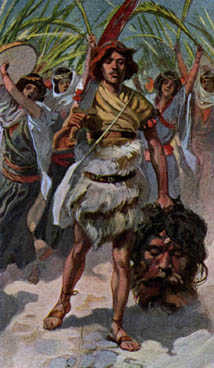
- David is given credit for killing the giant Goliath with a slingshot.
Actually David knocked him unconscious with a rock from his sling, then he took
Goliath's sword and killed him with it then cut off his head. David then
carried the head with him back to the city of Jerusalem eventually giving the
head to King Saul. - 1 Samuel 17:51-57
- Once David becomes king, the Amalekites invade his kingdom. Unlike the
bloody conquests of the Israelites, the "heathen" Amalekites burn the
captured city but they don't kill anyone, "great or small." David
pursues them and slays the Amalekites while they are camping. None of the
captured Israelites had been harmed by the Amalekites, in contrast to the
bloodbath the Israelites had been conducting against the Amalekites. The true
morality of the godly versus the ungodly is revealed once more. - 1 Samuel
30:1-19
- When the Philistines heard that David was made king, they came to find him.
God tells David to go to them and kill them. David does just as God had
commanded and killed them all. - 2 Samuel 5:17-25
- When the Syrians go to war against God's chosen people, God gets angry
because the Syrians mock him, saying, "he is God of the hills but not of
the valleys." (Remember, God had been unable to defeat the iron chariots
in the valley.) In retaliation, the Israelites are able to kill 100,000 Syrian
soldiers in one day. When the Syrians try to run away, a wall falls on them,
killing an additional 27,000 men. - 1 Kings 20:28-30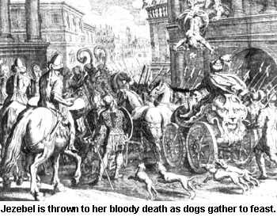
- God gets tired of the two kings which are ruling his chosen people (Jehoram
for Israel and Ahaziah for Judah) so he has his prophet annoint a soldier as
king and sends that soldier to the palace where he murders the two unsuspecting
kings. Then he has some servants toss the dead king's mother (Jezebel) out a
window. The Bible describes the scene in gory detail, "some of her blood
was sprinkled on the wall, and on the horses." The new king trods on her
dead body with his horse and then dogs come out and eat her carcass so that
when they go to bury her all they can find are her skull, her feet, and the
palms of her feet. - 2 Kings 9:1-35
- The new king then sends a letter to his fellow conspirators having them
kill the old king's 70 brothers (not too surprising, since one of the old kings
had killed all his own brothers when he rose to power - 2 Chronicles 21:4) and
telling them to put the 70 heads in baskets and ship the heads back home. When
the heads arrive, the new king has them stacked up at the entrance gate to the
city. The king then acts surprised when the people see the heads and he implies
that God killed them and sent their heads there to show that he wants all the
old king's family destroyed. The new king then proceeds to kill the remaining
members of the old kings' families. God responds to these acts by saying that
the new king "has done well in executing that which is right in mine
eyes," and that he had done unto the old king's household "according
to all that was in mine heart." - 2 Kings 10:1-17,30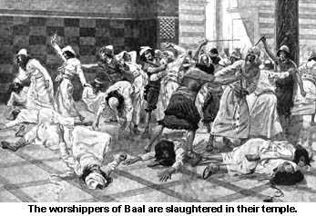
- The old kings had allowed for people to worship another God (Baal), so the
new king came up with a plan to bring them all together so he could kill them
all at once. He called for them all to come to the temple because, "I have
a great sacrifice to do to Baal and any who do not show up will be put to
death." Once he gathered all the Baal worshippers of the kingdom into the
temple, he had his soldiers kill them. - 2 Kings 10:18-25
- Not content to have his chosen race kill merely the "unchosen"
races, God divides his people into two main factions, Israel and Judah. God
then gets to play favorites with whichever group happens to be pleasing him
most at the time. In one instance, God has one of the groups kill 500,000 of
the other group. - 2 Chronicles 14:15-17
- After his prophets are ignored and mocked, God sends a foreign army to
Jerusalem to destroy the city, its temple and his chosen people, "and had
no compassion upon young man or maiden, old man, or him that stooped for age:
he gave them all into his hand." - 2 Chronicles 36:15-17
- God is praised for being the one that teaches hands how to conduct war and
fingers how to fight and shed blood. - Psalms 144:1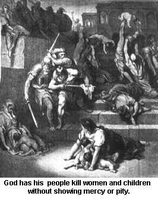
- God commands one of his prophets to walk through the city of Jerusalem and
put a mark on the forehead of the men who are crying out about the
wickedness of the city. God then sends out some other men to kill everyone in
the city who isn't owned by one of the men who have the mark on their
foreheads. God tells the men not to spare or have mercy or pity on anyone:
"Slay utterly old and young, both maids, and little children, and
women." These men obey God's word and the streets run with the blood of
the innocent. If you were the child or wife of a man who didn't happen to be
crying about the abominations of the city when the prophet came by, you would
be killed. When the prophet realized the horror that God intended, he begged
God not to do such an evil thing. God replied to the prophet that he wouldn't
change his mind or be merciful or have pity on the people of the city. Tell
this story the next time a Christian tries to tell you, "For God so loved
the world..."- Ezekiel 9:3-10
Sometimes God isn't content to wait for his human lackeys to kill for him
and he takes his bloody vengeance into his own hands. Why he couldn't just make
people disappear instead of causing them to die in excruciatingly painful
manners is a reflection of God's true, sadistic nature.
Some Biblical examples of God's stark fist of removal in action:
- Realizing that his creative skills are a failure, God decides to kill all
life on the planet except for a handful of humans and animals which he puts on
an ark (See Noah's Ark). He chooses the
horrifying "death by drowning" as the form of execution. - Genesis
6:6-7,7:21-23
- God sends fire and brimstone down onto the cities of Sodom and Gomorrah,
then kills Lot's wife when she looks back at the city by turning her into a
pillar of salt. - Genesis 19:24-26
- When a man is forced to have intercourse with his dead brother's wife (who
God had recently killed), God's stark fist drops down and kills him also. (See
Dirty, Disgusting Discharges) -
Genesis 38:1-10
- God kills uncounted humans and animals in Egypt, just so he can show off
his great powers. (See Moses and Pharoh) -
Exodus 12:29, 14:27
- God repeatedly punishes his chosen people when they "whine" about
inconveniences like starving to death or dying of thirst because God won't
provide water or food for them. When God finally broke down and gave them
"manna" (a doughy, fungus-like substance which would appear on the
ground in the morning), the people grew weary of eating it day in and day out
and begged Moses to ask God to send some meat for them to eat. God responded to
Moses by saying, "They want meat??? I'll give them so much meat to eat
that it will be coming out of their noses! Then they'll be sick of eating meat
also." So God blows some quails in and when the people begin to eat the
birds that they have gathered, God starts killing them with a "very great
plague." It isn't mentioned how many people died because they trusted God
would keep his word and let them have meat. - Numbers 11:33
- While the Israelites were traveling from Egypt, one of the tribes had the
special job of being priests. The priests got the best food and lived the
easiest existence, having to only perform rituals for their keep. When three
men from another tribe see the injustice of this caste system, they ask Moses,
"Since we are all God's chosen people, why are some of us placed in
positions that others have to bow down to or work for?" When God hears
what is going on, he is determined to show these ancient freethinkers exactly
how he responds to people who try to use reason. Moses has 250 men from the
questioning men's tribe hold up incense like the regular priests do. God then
tells Moses to step back so that he can burn up the entire congregation, guilty
and innocent alike. Moses falls on his face and pleads with God, "You're a
really great God. You're not going to destroy the entire congregation just
because one man has sinned are you?"
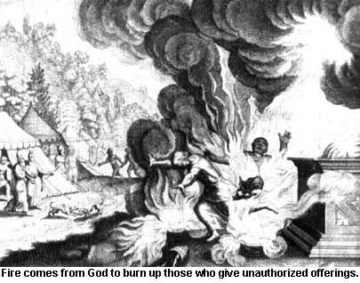God then changes his plan and tells Moses
to move the people away from the tents of the three men who were asking all
those annoying questions. God then proceeds to open up the earth and swallow
the houses, wives, children, servants, animals, and property of the men who
dared to question God's caste system. After the ground has closed on them, God
sends out a fire which burns up the other 250 men. He then tells Moses that the
remains of the burned men and the incense holders they carried are
"holy." And modern believers say that God abhors human sacrifice! -
Numbers 16:32-35
- This wasn't the first time that Moses had to intervene for the lives of the
people (See Moses , Advisor to the
All-Mighty). The next day, the Israelites accuse Moses of being the one who
had the people killed the previous day. When God hears about this, he once
again tells Moses, "Step aside so I can burn them all up with my holy
fire." When Moses looks out over the crowd, he sees that God has unleashed
a plague and people are falling dead. Moses realizes that God can't be reasoned
with at this point and he sends his head priest out to perform a magic ritual
to try to stop the plague. We can just imagine the priest waving his incense to
try to stop the wrath of God as the bodies fell around him. Whatever he did
appeared to work because when he finished his ritual, 14,700 dead bodies lay on
one side of him and the rest of the living stood on his other side. It's
comforting to know that even God's wrath responds to the "laws of
magic." - Numbers 16:44-49
- Once more the people grow weary of starving and thirsting (who wouldn't?)
and they dare to complain. God sends poisonous snakes to kill many of the
people. - Numbers 21:6
- When the enemy Philistines capture the Ark of the Covenant (a magical box
that the Israelites think God lived in), God sends a plague of hemorrhoids and
mice to the Philistines (See Jehovah's
Potty) who then give the Ark back to the Israelites. Silly Israelites, just
can't resist the urge to look inside the box and God killed the entire city
(50,070 men!) in response to their curiosity. - 1 Samuel 6:19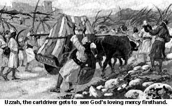
- While transporting the Ark on a cart, the oxen pulling the cart shook the
Ark and the cartdriver feared that the Ark may fall or be damaged so he reached
out to steady it. God had warned that no one was to touch the Ark except for
his specially privileged priests. It didn't matter that the cartdriver was only
trying to protect the Ark, God got angry and killed the driver there on the
spot. - 2 Samuel 6:7
- King David was commanded by God not to conduct a census or count the number
of Israelites (the reason God gave this command was that he had told Abraham
that he would have so many children that they couldn't be counted and if David
counted them, that would make God a liar.). The Bible tells us in one place
that God got angry with Israel and made David count them (2 Samuel 24:1). In
another place it says that Satan made David number Israel (1 Chronicles 21:1).
[Editor's note: We don't see the contradiction.] To make David pay for his
"sin" of counting the people, God gives him a choice of 7 years of
famine or being pursued by his enemies for 3 months or 3 days of pestilence.
David leaves the choice up to God who chooses the pestilence and proceeds to
kill 70,000 men. When God's angel of death reaches the capital city of
Jerusalem, God "repented him of the evil" and made the angel stop
killing. At least the Bible admits that the murders were "evil." -
2 Samuel 24:15-16
- A man was warned by God not to eat or drink at a certain place, then a
prophet lies to him and tells him that an angel said he could eat and drink at
that place. The man trusts the prophet and God sends a lion to eat the man
because he ate and drank there. Nothing happens to the prophet who lied. - 1
Kings 13:18
- Jeroboam becomes the king of God's chosen people and allows the worship of
idols. God vows that every member of his family will be slaughtered and left to
be eaten by dogs and birds. God decides that the king's son (who is sick at the
time) is the only one who is good enough to avoid the upcoming punishment so
God rewards him by killing him right away instead of having him suffer along
with the rest of the king's family. - 1 Kings 14:1-13
- When a captain and his 50 men came to find the prophet Elijah, they asked
for the man of God to come down. Elijah responded by saying "If I'm a man
of God, then let fire come down from heaven and consume you." God gave
Elijah the sign that he asked for and burned up the captain and his 50 men.
Another captain was sent with 50 men and God repeats his fiery performance,
burning them all to a crisp. - 2 Kings 1:10-11

- When the Assyrians camped outside of the city of Jerusalem, God sent his
angel to do his dirty work once more and 185,000 Assyrians were slaughtered in
one night. Now that's an efficient angel. - 2 Kings 19:35
- God threatens to destroy his wayward people because he is "weary of
repenting." He tells them that if they take wives and have sons and
daughters where they are living, "they shall die of grievous deaths; they
shall not be lamented; neither shall they be buried; but they shall be as dung
upon the face of the earth: and they shall be consumed by the sword, and by
famine; and their carcasses shall be meat for the fowls of heaven, and for the
beasts of the earth." - Jeremiah 15:6-7, 16:3-4
- Not satisfied with this threat, God goes on to say that he will bring a
sword among them to kill them and that he will destroy their cities. He then
says that he will allow some of them to escape just so they will remember how
terrible the Lord was. Those who are near will be killed with the sword and
will starve in famine and God will kill those who are far away with disease,
"And they shall know that I am the LORD, and that I have not said in vain
that would do this evil unto them." Once more God admits that what
he does is evil. God is finally telling the truth! - Ezekiel 6:3-13
- Don't be mistaken about the evil of God's intentions, for he admits that
his sword will go out against all flesh, both the righteous, right along with
the wicked. - Ezekiel 21:3-5
- God threatens to send armies after his chosen people in order to stone them
and slay them with swords and kill their sons and daughters. - Ezekiel
23:46-47
- In his excitement, God says that he will make a great bonfire out of the
city of Jerusalem. Commanding, "Heap on wood, kindle the fire, consume the
flesh, and spice it well, and let the bones be burned." Once more, God
reveals his bloody craving for human barbecue. - Ezekiel 24:9-10
- True to his word, God kills his own people. One of the prophets cries out
to God, "The young and the old lie on the ground in the streets: my
virgins and my young men are fallen by the sword; thou has slain them in the
day of thine anger; thou hast killed and not pitied." We couldn't have
said it better ourselves. - Lamentations 2:21
The majority of the conversations which God has with his chosen people
involve him threatening to destroy someone in some hideous fashion or other. In
these childish displays of temper, God reveals his true nature.
- God says that those who don't kill everyone exactly as he commanded will be
cursed, "and cursed be he that keepeth back his sword from blood." -
Jeremiah 48:1,10
- "God is jealous, and the LORD revengeth; the LORD revengeth, and is
furious; the LORD will take vengeance on his adversaries, and he reserveth
wrath for his enemies. Who can stand before his indignation? and who can abide
in the fierceness of his anger? His fury is poured out like fire, and the rocks
are thrown down by him." - Nahum 1:2,6
- God says that he will treat the ungodly like a mother bear that has her
cubs taken from her, "and will rend the caul of their heart, and there
will I devour them like a lion: the wild beast shall tear them." Don't
think that they will be able to ask for forgiveness or repent because God will
keep them alive just so he can torment them. And he will show no mercy or pity.
- Hosea 13:8,14
- God says that in time all flesh will come to worship him. "And they
shall go forth, and look upon the carcases of the men that have transgressed
against me: for their worm shall not die, neither shall their fire be quenched;
and they shall be an abhorring unto all flesh." - Isaiah 66:23-24
- Not content to simply kill, God graphically describes how he will punish
those that have made him angry, "And this shall be the plague wherewith
the LORD will smite all the people that have fought against Jerusalem; Their
flesh shall consume away while they stand upon their feet, and their eyes shall
consume away in their holes, and their tongue shall consume away in their
mouth. And so shall be the plague of the horse, of the mule, of the camel, and
of the ass, and of all the beasts that shall be in these tents, as this plague.
Zechariah 14:12,15
- Reminiscent of a scene from Hellraiser, God threatens to tear the flesh
away with hooks and to tear the children with fishhooks. - Amos 4:2
- " For the indignation of the LORD is upon all nations, and his fury
upon all their armies: he hath utterly destroyed them, he hath delivered them
to the slaughter. Their slain also shall be cast out, and their stink shall
come up out of their carcases, and the mountains shall be melted with their
blood." - Isaiah 34:2-3
- God threatens to melt his chosen people, wherever they may try to flee from
his wrath he will find them. "Yea, I will gather you, and blow upon you in
the fire of my wrath, and ye shall be melted in the midst thereof. And I will
pour out mine indignation upon thee, I will blow against thee in the fire of my
wrath, and deliver thee into the hand of brutish men, and skilful to destroy.
Thou shalt be for fuel to the fire; thy blood shall be in the midst of the
land; thou shalt be no more remembered: for I the LORD have spoken it."
Uh, could you maybe pick somone else to be your chosen people? - Ezekiel
22:21; 21:31-32
The Bible tells us that Jesus loved little children so much that when adults
tried to keep them from bothering Jesus, he told the adults to let the children
come unto him (Matthew 19:14). Apparently Jesus' father (God) didn't have the
same caring opinion of children, as is clear from how he allowed them to be
treated in the Bible.
- God threatens to send wild beasts among his chosen people that will steal
their children from them and eat them. He then tells them that if they still
don't obey him, he will cause them to eat their own children. - Leviticus
26:22,29
- Apparently, God likes to threaten his people with the horrible idea of
eating their own children because he mentions it again. - Deuteronomy
28:53
- And again... - Jeremiah 19:9
- One of the prophets dares to ask God, "Think about who you're doing
this to. Are you going to make women eat their babies and children much
longer?" - Lamentations 2:20, 4:10
- One woman goes to see the king because she had made a deal with another
woman that had been broken. She tells the king, "This woman said to me,
bring your son so we may eat him today and we will eat my son tomorrow. So we
boiled my son, and ate him and I said to her the next day, bring your son so we
can eat him and she hid her son from me." When the king tried to get the
prophet to make the horror stop, the prophet said, "Behold this
evil is of the Lord." We are in total agreement. - 2 Kings
6:28-29, 33
- God didn't reserve the eating of children to just his chosen people.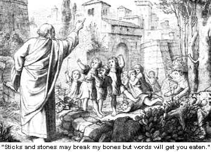 He promised that he would
feed those who oppressed the Israelites with their own children and he would
make them drunk on their own blood. - Isaiah 49:26
- Even God understands how annoying the tauntings of children can be. When
God's prophet is taunted and called "baldhead" by some children, God
sends two bears down to kill 42 of the disrespectful little brats. - 2 Kings
2:23-24
- To punish King David for having adultery, God kills the baby that was
created as a result of the illicit liaison. - 2 Samuel 12: 1,19
- We have already pointed out numerous examples where children were killed by
God or in God's name. When God threatens his chosen people he makes sure they
know that the people who will take their little children and slam them against
the stones will be happy. - Psalms 137:9
- God continues this graphic imagery, telling them that "Their infants
will be dashed to pieces before their eyes...and they shall have no pity on the
fruit of the womb; their eye shall not spare children." Of course, the
fact that the Israelites had practiced this same brotherly love and mercy
earlier, on the same people that will do these things to them, isn't
mentioned.- Isaiah 13:16 Hosea 13:16
- When God finally gives up hope on Israel he curses them that they won't
have children and if they do, he says that he will, "slay even the beloved
fruit of their womb." - Hosea 9:16
- Even though the Bible says that children won't be punished for the sins
their fathers committed (yeah, right!), the children of Lucifer will be
slaughtered for the iniquity of their fathers so that they won't rise up and
get control of the earth. [Editor's note: The battle has just begun, my
friends, the children of Lucifer shall rule supreme and life, liberty and
reason shall rule the day!] - Isaiah 14:21
The Bible is flaunted by many as the ultimate source for human morality. But
as we have shown, God's actions, as well as the actions of his followers, have
often been nothing but pure evil. The Bible should show how man should treat
his fellow man yet the example it shows is often bloody and violent.
- When Moses sees an Egyptian hit a Hebrew, he kills the Egyptian. -
Exodus 2:12
- An Israelite warrior kills 600 Philistines with an oxgoad. - Judges
3:31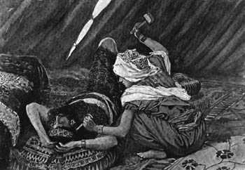
- When a weary man tries to hide from his pursuers an Israelite woman tells
him to come into her tent where she will protect him. Then she sneaks in while
he's sleeping and nails his head to the floor with a hammer. - Judges
4:18-21
- In an attempt to provide wives for the few remaining men of the tribe of
Benjamin (See Thou Shalt Not Kill...Unless I Tell You
To) the Israelites attack a city of their own people and slaughter all the
men, all the children and all the women who are not virgins. Then they give the
remaining 400 virgins to the men of Benjamin for wives. - Judges
21:10-12
- The Philistines get credit for killing 30,000 Israelite footsoldiers.
Interestingly no mention is made of the Philistines killing any women or
children. Remind us again who the righteous side is? - 1 Samuel 4:10
- To purchase the hand of the king's daughter in marriage, David kills 200
Philistine men and cuts off the foreskin of all their penises. - 1 Samuel
18:27
- David inspires some of the bloodiest incidents of the Bible. Killing and
mutilating tens of thousands of men, women and children, the handicapped,
animals and his own loyal subjects (See Take
My Wife...PLEASE!). - 2 Samuel 2:23, 30, 8:1-18, 10:18, 11:14-27,
- Killing for revenge is a common theme in the Bible. There was even a law
that allowed for a relative to go out and kill someone who accidentally killed
their relative. They were even given the "noble" title:
"Revenger of Blood." - Numbers 35:19, Deuteronomy 19:6, Joshua
20:3-9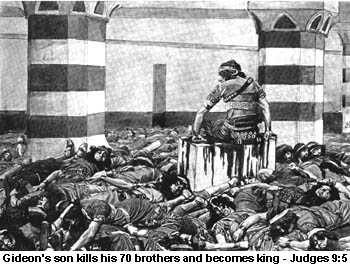
- Abimelech became king over God's people whereupon he killed his 70 brothers
then killed everyone in a city (in the process, burning 1,000 men and women in
a tower) and when he tried to invade another city, a woman dropped a rock on
his head. Before he could die he had his servant kill him so that no one could
say that he was killed by a woman. - Judges 9:5,44-45,49, 53-54
- When Abner killed Asahel, Joab and Abishai return the favor by killing
Abner. - 2 Samuel 2:23, 3:30
- Then when Rechan and Baanah kill Ish-bosheth, behead him, and take his head
to David, the king returns the favor by having Rechan and Baanah killed. He
then cuts off their hands and feet and hangs their bodies by a pool. - 2
Samuel 4:7-8, 12
- Absalom has his half-brother murdered by his servants because he raped his
sister. Later Absalom gets his when he is murdered by Joab - 2 Samuel
13:28-29, 18:14-15
- David's servants proceed to kill 20,000 Israelite men in the forests of
Ephraim. More people than that die lost in the woods. - 2 Samuel 18:6-8
- In the midst of the battles which David inspired, the Bible makes a graphic
description of a man being disemboweled and wallowing in his own blood on the
road. - 2 Samuel 20:10-12
- The wise King Solomon was responsible for his own share of bloodshed,
murdering some of his father's most loyal servants; Adonijah, Joab and Shime-i.
Solomon claims he killed them to take away the innocent blood which they shed
from off of himself and the house of David. - 1 Kings 2:24-25, 29-34, 46
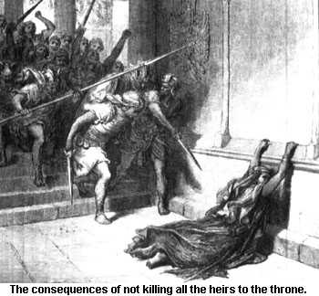
- Men weren't the only ones slaying people in the Bible. When the daughter of
Jezebel (the mother of one of the murdered kings) saw that her son had been
murdered, she got up and killed all the kings sons (her own grandsons) except
one which had been hidden by the king's sister. 6 years later she is killed by
the followers of this son who crown him king then butcher her. - 2 Kings
11:1-2
- The son of a murdered king rose to power and killed his servants (who had
murdered his father, the king) but he didn't kill the families of his servants
because he believed that God had said, "The fathers shall not be put to
death for the children, nor the children be put to death for the fathers; but
every man shall be put to death for his own sin." Too bad God couldn't
keep that bit of advice himself. After making such a noble gesture, this same
king invaded a city and killed 10,000 people.- 2 Kings 14:5-7
- In the story of Daniel in the lion's den, Daniel was sentenced to spend a
night in a den full of lions because he refused to not pray to his God. The
lions didn't eat Daniel because an angel kept the lions' mouths closed. When
the king heard about this he threw those who had accused Daniel into the lion's
den. What most people don't know is that the king also threw their wives and
children into the lion's den and the lions tore them all to pieces. - Daniel
6:24
With the careless attitude that their God displays towards human life in the
Bible, it's amazing that Christians can dare call themselves
"pro-life." Human life is the most valuable commodity on this planet
and it is the basis by which there is objectivist morality. God doesn't appear
to share this opinion, even when it comes to the unborn or very young infants.
One out of every four pregnancies ends in miscarriage or "abortion."
The reason for these abortions is often because the developing fetus had some
sort of genetic problem which would have kept it from being healthy if
it had continued to develop. Since God is the one responsible for creation, he
is also responsible for these genetic errors. So, the next time you see
Christians picketing an abortion clinic, remind them that God has been
responsible for more abortions than every abortion clinic that has ever
existed. Not to mention his little temper tantrums where thousands of pregnant
women and their unborn children are killed (See Noah's Ark).
Some Biblical examples of what God caused to happen to the unborn or the
very young so that he could punish his wayward human pets:
- One of God's chosen people killed the king of Israel and sat on the throne
only to be replaced by another who killed him, then another killed that one.
This king of God's chosen people went to a city and killed everyone in it. He
also took the pregnant women and "ripped them up." - 2 Kings
15:16
- One of God's prophets begs God to give one of the tribes of Israel "a
miscarrying womb and dry breasts." Not only does he want God to make them
abort, he wants the women to be unable to feed whatever children they do have.
Is this what you would call "pro-life?" - Hosea 9:14
- This same prophet proclaims that the people of Samaria, "shall fall by
the sword: their infants shall be dashed in pieces, and their women with child
shall be ripped up." - - Hosea 13:16
The Bible is full of atrocities which are committed against man and beast in
the name of God. The cruel manner by which God's chosen people execute his
wrath reflects the nature of a truly sadistic God.
- The Israelites make the men of Hamor cut off their foreskins, then the
Israelites kill them while they are unable to fight back. (See
Sexual Mutilation) - Genesis
34:13-29
- When God sends the Israelites to invade the lands of Canaan he tells them
that he will drive out the people with fear and that he will send hornets to
drive them out so they can inherit the land. Of course a little later, God
denies saying that he would drive them out (Judges 2:3). - Exodus
23:27-30
- The Bible condones slavery as being okay. It even goes so far as to say
that you can beat a slave to death as long as he doesn't die right away. That
way, the murderer loses money by having to take care of the dying slave and
afterall "it's his money that he's losing." - Exodus 21:20-21
- God gives people painful and debilitating diseases such as leprosy or
hemorrhoids in order to punish them. When Moses sister-in-law criticizes him,
God gives her leprosy. When the Philistines take the Ark of the Covenant, God
gives them hemorrhoids. - Numbers 21:1-10, 1 Samuel 5:6-9, 2 Kings 5:27,
15:3-5
- The method of execution used by God's people was nearly always
excruciatingly cruel. For instance, when a man took a garment, some silver and
a piece of gold from a city that had been destroyed, Joshua had the man, his
sons, daughters, oxen, asses and sheep all stoned with stones and then burned
with fire. - Joshua 7:24-25
- God tells Joshua that when the horses of the enemy are captured, they are
to cut the hamstrings of the horses. David pulls a similar stunt with horses
that he captures. Where's the ASPCA when you need them? - Joshua 11:6,9, 2
Samuel 8:4
- Judah captures a king and has his thumbs and big toes cut off. The king
doesn't seem to mind though because he claimed to have done the same thing to
70 kings himself and now God has paid him back. They take him to Jerusalem and
he dies, probably from slowly bleeding to death. - Judges 1:7-8
- Gideon's army passes through an Israelite city and demands that the elders
of the city provide them with food. The elders ask Gideon, "How do we know
that you are actually on a mission from God? Later, Gideon teaches these elders
some respect with thorns and briers from the wilderness. - Judges 8:4-16
- The Bible says that Jesus taught that if your right eye offends you, you
should pluck it out. It also describes Samson, one of God's bloodiest heroes,
getting his eyes gouged out. - Judges 16:21
- After a man sends his concubine out into the hands of a mob, they rape her
until she dies, the man then cuts her body into twelve pieces and ships the
pieces across the land for people to see the horror that has been done by the
mob. - Judges 19:22-29
- To scare the people into obeying him, King Saul cuts some oxen into pieces
and sends the bloody pieces across the land, telling the people that whoever
doesn't obey will have the same thing done to their oxen. - 1 Samuel
11:7
- During the victory celebrations, women sing and dance, heartlessly bragging
that King Saul has killed thousands of people but David has killed tens of
thousands. This makes the king very angry and jealous of David. - 1 Samuel
18:7
- Jesus is supposed to have healed the blind but not much mention is made of
the times when God's prophets intentionally made people blind. - Genesis
19:11, 2 Kings 6:18, Acts 13:11
- King David sets an example that will be later used by godly men during the
crusades and the inquisition by taking the inhabitants of all the cities of
Ammon and cutting them up with saws and axes and harrows of iron. - 1
Chronicles 20:3
- While describing the results of God's wrath on his chosen people, a prophet
says "Those slain by the sword are better off than those who die of
famine; racked with hunger, they waste away for lack of food. ... pitiful women
have cooked their own children, who became their food ..." God has begun
to learn that there are worse punishments than even death. - Lamentations
4:9-10
- Another prophet describes the actions of the cannibalistic Israelites in
detail: "Who pluck off their skin from off them, and their flesh from off
their bones; who also eat the flesh of my people, and flay their skin from off
them; and they break their bones, and chop them in pieces, as for the pot, and
as flesh with the cauldron." Remember God said he would cause them to eat
their own children because they wouldn't worship only him. Not only a jealous
God, but exceedingly cruel also! - Micah 3:2-3
God is supposed to be the perfect judge for all of creation. The laws and
punishments he gave to his chosen people should reflect the perfection of his
justice. Here are a few examples of what God would call "justice."
- If a woman tries to defend her husband and accidentally touches the
genitals of another man while fighting she is to have her hand cut off. -
Deuteronomy 25:11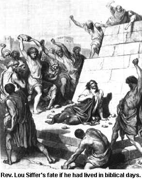
- If a son is stubborn or rebellious, he is to be stoned to death. -
Deuteronomy 21:18-2
- If a man hates his wife all he has to do is accuse her of not being a
virgin when he married her. If her parents can't provide a bloody sheet to
prove that she was a virgin on her wedding night, she is to be stoned to death.
- Deuteronomy 22:13-21
- If a woman is raped and doesn't cry out she is to be stoned to death. -
Deuteronomy 22:23-24
- If the daughter of a priest is promiscuous she is to be burnt to death. -
Leviticus 21:9
- If a man has intercourse with a woman while she is on her menstrual cycle
they are both to be put to death. - Leviticus 20:18
- Homosexuals are to be put to death. - Leviticus 20:13
- Anyone who has sexual relations with an animal must be put to death. -
Exodus 22:19, Leviticus 20:15-16
- Those who don't get circumcised are to be put to death. - Genesis
17:14
- Anyone who works on the sabbath is to be put to death. - Exodus
31:14-17
- Offering sacrifices that aren't in keeping with God's strict orders will
get you killed. - Leviticus 10:1-2
- Butchering an animal without letting God get a taste of the blood is a
crime punishable by death. - Leviticus 17:3-4
- If someone commits blasphemy against God they are to be put to death. -
Leviticus 24:16
- Anyone who studies astrology is to be stoned to death. - Deuteronomy
17:2-5
- If someone tries to get you to go to a different church, they are to be
stoned to death without pity or mercy. - Deuteronomy 13:6-11
- If the inhabitants of a city begin to worship other gods they are to be
slaughtered and their city burned to the ground. - Deuteronomy 13:12-17
- Witches are to be killed. - Exodus 22:18
- Cursing your parents will get you put to death. - Exodus 21:17,
Leviticus 20:9
- If an animal or human even touches Mount Sinai while God is on it, they are
to be shot with arrows or stoned to death. - Exodus 19:12-14
- God makes a comprehensive list of all the horrible things that will happen
if his chosen people don't follow the laws and commandments that are in the
Bible. Included are such things as hemorrhoids, scabs, itching which doesn't
heal, blindness, insanity, sores from head to foot, famine, cannibalism and
pestilence from all sides. - Deuteronomy 28:15-68
"But those references are all from the Old Testament!" Christians
will cry, "There's a new covenant now!" Unfortunately, we have to
point out that the last book of the Old Testament says that God never changes
(Malachi 3:6). If God did those things to humans once, he will do them again
and again. But what about Jesus? Jesus is supposed to be loving and peaceful,
the kind of god that wouldn't hurt a fly. Let's see what the Bible says about
this.
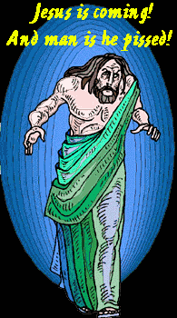
- The loving Jesus introduces a new form of cruelty to mankind: the concept
of an eternal barbecue called, "HELL"
where there will be weeping, wailing and gnashing of teeth. Now, God gets to
enjoy the smell of burning humans for all eternity. Thank you JESUS! -
Matthew 3:12, 8:12, 10:21, 13:30, 42, 22:13, 24:51, 25:30, Luke 13:28, John
5:24
- Jesus tells a parable about himself and reveals his true nature by saying,
"But those mine enemies, which would not that I should reign over them,
bring hither, and slay them before me. - Luke 19:27
- While telling his disciples what they can expect in the near future, Jesus
throws in that brothers will turn in each other to be killed, fathers will have
their children put to death and children will cause their parents to be killed.
- Matthew 10:21
- Jesus also showed his love and kindness by predicting that pregnant women,
infants and children would suffer greatly in the coming "days of
vengeance." The fact that he wasn't appalled with the injustice of the
idea shows that his heart was just as cruel as his evil Father/God. - Luke
21:22-23
- Did Jesus come to bring peace on earth? Let's see what Jesus says about
that: "Do not think that I have come to bring peace on earth: I did not
come to bring peace, I came to bring a sword. I have come to turn a man against
his father, a daughter against her mother, a daughter-in-law against her
mother-in-law. And a man's enemies will be the members of his own family. He
who loves his father or mother or son or daughter more than he loves me is not
worthy of me." - Matthew 10:34-37
- Jesus taught that to follow him you had to first hate your family. -
Luke 14:26
- Jesus commanded his followers to purchase swords. - Luke 22:36
- Jesus didn't only use his magic powers to heal the sick. He also used them
to curse a fig tree (Mark 11:12-14) and he cursed the inhabitants of three
cities which didn't repent after he performed miracles for them. He condemned
the people of these cities to hell and said that their punishment would be
worse than the fiery destruction of Sodom. He finishes up by thanking God that
the truth has been hidden from the wise men who could most benefit from its
saving power. - Matthew 11:20-25
- Jesus supposedly had the power to transform water into wine. At his last
supper he turned the wine into his own blood and commanded his disciples to
drink it (Mark 14:22-24) in violation of God's commandment to not drink blood
(Genesis 9:4-5). This bloody, cannibalistic cocktail is recreated in churches
across the world every week. Catholic believers are told that they must believe
that the wine has actually transformed into the physical blood of Jesus. Jesus
himself taught that the way to gain eternal life was to drink his blood. The
vampiric traits of his father (God) must have been hereditary. - John
6:53-54
We only need look at the history of Christianity to see that God's reign of
bloody horror didn't cease with the writing of the Bible. Christianity rose to
become the most powerful religion in Europe bringing what is known as the
"Dark Ages." During this time, human progress ceased, just as the
alien Gods wanted and man used terror and torture to keep the minds of men
enslaved. The Bible was used as the standard of morality to decide what should
be considered cruel or unusual punishment. After seeing the horror that the
Bible contains we understand why such atrocities went unquestioned by the
faithful of the age.
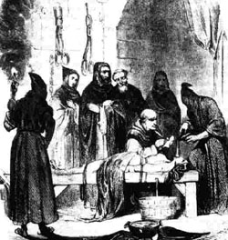The rule of Christianity
brought the barbaric cruelty of the Crusades, the Inquisition, and violent and
merciless attacks against Jews and other religions. During one of the attacks
on a city of thousands, one of the Christian leaders was asked what the
soldiers should do to be able to tell who in the city was a Christian and who
was a Jew or member of some other heathen religion. The leader responded:
"Kill them all, for the Lord knows them that are his." The only
technological advances made during that time involved the varied and bizarre
torture and execution devices by which souls were "cleansed" before
being sent off to their final judgement with God. Even after the inquisitions
were brought to an end, the endless need to purify the church and populace by
removing heretics and evildoers led to the great witch hunts. These travesties
of justice allowed the torture and horror to continue until the late eighteenth
century. Today, the terror continues with bombings and shootings of the
"infidel" or the abortion clinic worker. Murders which take the lives
of those who are attempting to keep the peace and obey the laws of the land.
These Bible-thumpers wouldn't be bombing or shooting anyone if they obeyed
their Bible, which orders them to obey the government, pay taxes and obey the
laws of the land because "God ordains all those who are in power."
(Romans 13:1-9) If God didn't want you to obey them, he wouldn't let them be in
power...he's God afterall!
The day has come for men to stop killing each other in the name of an angry,
jealous and immature God. Join us as we wave the banner of reason above the
broken remains of the primitive, barbaric mind of fear and terror. The blood of
God's countless innocent victims cries out from the ground..."Don't forget
us!" Let us avenge their suffering by returning the cry..."NEVER
AGAIN!"

Return to the Luciferian Liberation Front's Main
Page.
E-Mail your questions and
comments.